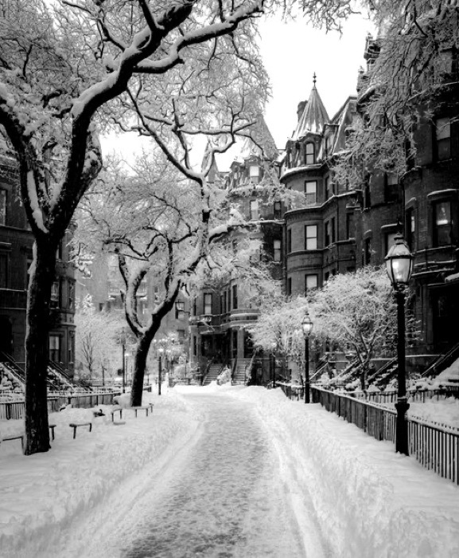
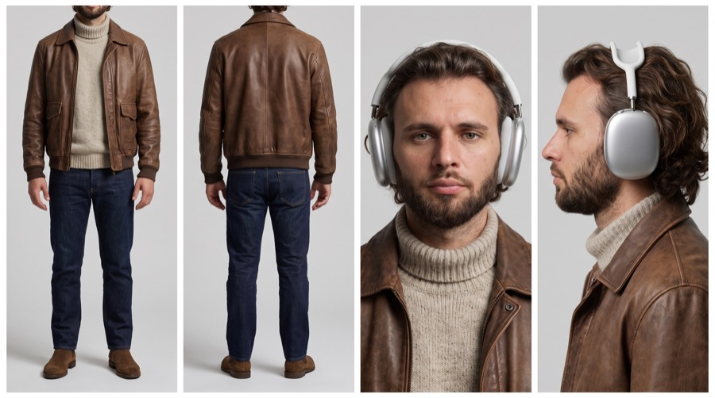

Дерево
с подарками
Заснеженная улица, герой трясёт ветку — сверху падает ком снега. Трясёт второй раз — в ладони садится белый голубь. Трясёт третий — падает коробка PlayStation. Двенадцать секунд, один непрерывный кадр, уровень дорогой рекламы. Внутри — весь промпт целиком и разбор, на чём он держится.


Целиком
Двадцать пять тысяч знаков. Это не раздутость: почти половина текста — свет, плёночный грейд и физика, то есть ровно то, что отличает рекламный кадр от «сгенерированного видео». Секунды прописаны поштучно, приоритеты референсов заданы явно.
@Image1 = environment and location reference only. Use @Image1 for the surrounding location: the snow-covered urban residential street, the row of brownstone / Victorian townhouses with bay windows, dormers, turrets and stone facades, the wrought-iron fences and railings, the ornate street lamps, the cleared footpath cutting through deep snow, the snow-laden bare trees lining the sidewalk, the spatial atmosphere, the winter light quality, and the overall environmental mood. Rebuild the scene naturally inside this location. Do not copy people or unrelated foreground objects from @Image1. IMPORTANT: @Image1 is a black-and-white photograph. The monochrome treatment is a photographic style of the reference, NOT the colour of the scene. Render the final video in full natural colour: cool blue-grey winter daylight, white and blue-grey snow, warm brown-red brownstone masonry, dark wet asphalt, black iron railings, warm amber lamp glass. Inherit the location's architecture, geometry, snow depth, tree structure and light direction from @Image1 — never its monochrome grade. @Image2 = highest-priority character identity reference only. Use @Image2 for the man's exact face, facial proportions, bone structure, eye colour, beard shape and density, hairstyle and hair length, skin tone, body proportions, clothing, styling, and overall personal appearance. Preserve the same man consistently throughout the entire video. His outfit is locked to @Image2 and must remain identical in every frame: distressed brown leather bomber jacket with shirt-style collar, ribbed cuffs and ribbed hem, two flap chest pockets and front zip; cream ecru chunky-knit wool turtleneck worn underneath with the roll-neck visible above the jacket collar; dark indigo raw denim jeans, straight leg; brown suede Chelsea boots. He wears the silver over-ear headphones from @Image2 on his head throughout the entire scene — exact silver anodised aluminium ear cups, mesh canopy headband, telescopic stems, identical proportions and finish. The headphones stay on his head at all times and never change shape, colour or position. Do not inherit the studio background or the grey seamless backdrop from @Image2. Only his identity, wardrobe and headphones carry over. @Image3 = maximum-priority exact identity reference for the final product. The third object that falls after the final tree shake must be exactly the object shown in @Image3: the retail box of the PlayStation 5 Digital Edition console. Preserve its exact shape, box dimensions, rectangular carton proportions, geometry, cardboard material and matte print finish, the blue top band, the black front face, the white console imagery, the white DualSense controller imagery, the PlayStation logo, the "PS5" wordmark, the "PlayStation®5 Digital Edition" typography, the 8K / 4K 120 / HDR badges, the side-panel printing, the carry handle slot at the top, the small print block, the edges, corners, seams and every distinctive visible detail. From the first frame in which the box becomes visible until it leaves the frame with the man, @Image3 has maximum visual priority. Never replace it with a generic, similar or re-designed console box. Maintain identical product identity through falling, catching, holding, inspection, turning, walking and exit. All logos, typography and printed graphics must stay perfectly stable and legible — no warping, no invented text, no morphing branding. Generate a 12-second, 16:9 continuous cinematic scene. The shot begins already composed as an expensive feature-film frame. The camera is positioned at approximately natural chest-to-eye height with a cinematic 40–50mm equivalent perspective. The winter street environment from @Image1 fills the background and establishes the location immediately: the cleared snow path receding into the frame, the row of snow-covered townhouses on the right, the iron railings, the tall bare snow-laden trees, and the deep untouched snow banks flanking the path. A mature snow-laden deciduous street tree is always present as a major foreground and midground storytelling element. TREE COMPOSITION: The main tree trunk occupies approximately the right third of the 16:9 frame. It rises vertically and slightly diagonally from the lower-right area toward the upper-right portion of the frame, its dark wet bark contrasting against thick ridges of accumulated snow resting along the upper surfaces of every limb. A clearly visible thick, structurally believable branch extends from the trunk toward the centre of the image at approximately the man's upper-chest-to-shoulder height. This is the branch he physically grabs and shakes. It must be thick enough to look believable when held firmly with two hands — not a thin twig or fragile snow-covered shoot. The usable shaking section of the branch reaches approximately into the central 40–60% horizontal area of the frame so the man can reach it naturally without leaning, stretching unnaturally, or stepping into the deep snow behind the tree. Secondary snow-loaded branches occupy much of the upper-right quadrant and extend across part of the upper centre of the frame. Some snow-covered twigs appear closer to the lens as soft foreground layers while the thick working branch remains clearly readable in the midground. The tree occupies roughly 30–40% of the total visual area but never blocks the man's face, his headphones, or the final @Image3 box. The man performs most of the action around the centre-left and centre of the frame, standing on the cleared snow path. The street from @Image1 remains visible through and behind the tree, creating clear foreground, midground and background separation. The tree must feel physically planted inside the @Image1 street, matching the scene's perspective, ground level, snow depth, atmospheric conditions, light direction, shadow direction and environmental colour response. It must never look pasted into the location. 0.0–0.1s Open immediately on the fully established winter street from @Image1 with the snow-laden tree already dominating the right foreground and midground. The man is just outside the left edge of the frame but is already beginning to enter almost immediately. Environmental air movement is subtle and believable. Fine loose snow crystals drift off branch edges, a few slow flakes cross the air, and distant snow surfaces respond gently to the cold still air of the street. 0.1–1.0s The man from @Image2 enters almost immediately from the left edge and walks toward the tree along the cleared path. His walk feels completely human: realistic heel-to-toe steps compressing packed snow, natural body-weight transfer, slight vertical body motion, restrained arm movement, subtle leather-jacket inertia, relaxed balance, faint visible breath in the cold air. He moves purposefully without rushing. His attention is initially directed toward the tree rather than toward the camera. 1.0–1.6s He reaches the thick working branch and stops in a natural three-quarter stance approximately 30–45 degrees relative to the camera. He is neither full profile nor frontal. He briefly raises his gaze toward the branch at approximately a 45-degree upward angle, naturally checking the tree before interacting with it. His expression is calm, intelligent, serious and understated. 1.6–2.5s He takes the thick branch firmly with both hands. He gently rocks the branch back and forth twice. The movement is clearly two-directional and physically understandable: sway one way, return, sway again, return. This is not a sharp pull, single jerk or exaggerated shake. His feet remain grounded in the packed snow. His torso stays almost still. The movement comes primarily from his hands, forearms, elbows and a small natural contribution from his shoulders. The thick branch resists slightly, flexes under the force of his hands, rebounds, and continues a subtle residual oscillation after the motion. A restrained irregular release of snow breaks loose: fine powder veils, small crumbling clumps, and glittering ice crystals drifting downward. The snow falls with different depths, trajectories, tumbling speeds and distances from the lens. Some passes through foreground blur, some around his body, some near the branch. It never forms an artificial uniform snow curtain. 2.5–3.4s As the branch finishes its natural oscillation and snow is still falling, a dense compacted snowball-sized clump of snow drops from a higher limb. He does not watch it fall and does not prepare his hands too early. Only at the natural last moment does he smoothly move his hands into position and catch the snow clump around stomach height. The catch has realistic timing, inertia, hand coordination and a small downward absorption of the clump's weight, with a light puff of loose powder bursting at the moment of contact. Allow the snow clump to remain clearly visible in his hands for a brief fraction of a second. His expression does not change. 3.4–3.9s Without examining it, he casually tosses the snow clump backward toward the left side of the frame, back toward the direction from which he entered. It follows a believable weighted arc, shedding a small trail of loose powder, and exits naturally. His gesture is effortless and understated. 3.9–4.5s The throw resolves directly into the next action. His arms return toward the tree naturally. There is no robotic pause and no visible waiting for the next event. Every action flows physically into the following action. 4.5–5.4s He grips the same thick branch again with both hands and gently rocks it back and forth twice. Maintain the same realistic branch resistance, hand pressure, small amplitude, elasticity, rebound and natural residual motion. Another restrained irregular release of powder snow and small clumps drifts downward through the cold air. 5.4–6.3s As snow continues moving through the air, a small white dove softly descends from above into his open hands. The dove is clearly alive and lightweight. It does not fall with the physics of a hard object. Its wings are mostly folded as it settles naturally into his palms, its white plumage catching the cold daylight against the dark leather of his sleeves. His hands softly absorb the bird's arrival with realistic human coordination. 6.3–6.7s He gives the white dove one brief downward evaluating glance. No surprise. No sentimental reaction. No broad smile. Only a short, controlled, human acknowledgment. 6.7–7.4s He gently lifts and opens his hands. The dove spreads its wings naturally and takes flight, its wingbeats kicking a small swirl of loose snow crystals off his gloved-free palms. It flies very close across the camera foreground, briefly becoming a large soft foreground element and creating strong cinematic parallax and depth, then rises toward an upper corner and leaves the frame. The wing movement is elegant, physically believable and naturally fast without becoming frantic. 7.4–8.0s While the dove completes its flight past the camera, the man is already transitioning back toward the branch. His hands lower and reconnect with the next action fluidly. No empty pause. 8.0–8.9s He grips the thick branch for the third time and gently rocks it back and forth twice. Maintain the same restrained human force and realistic tree physics. The branch bends, returns and continues a slight residual oscillation. A final irregular cascade of snow powder and small clumps drifts downward through several depth layers, the finest crystals catching the light like suspended glitter. 8.9–9.8s While the branch settles and snow continues moving through the air, the exact PlayStation 5 Digital Edition box from @Image3 becomes visible falling from above. From its very first visible frame, it must already be the exact @Image3 object. Maintain exact @Image3 identity throughout the fall: exact box dimensions; exact proportions; exact carton geometry; exact matte printed cardboard material; exact blue top band and black front face; exact white console and white DualSense controller imagery; exact PlayStation logo; exact "PS5" wordmark; exact "PlayStation®5 Digital Edition" typography; exact 8K / 4K 120 / HDR badges; exact side-panel printing and small print blocks; exact carry-handle slot; exact edge, corner and seam structure. The man catches the box naturally with both hands around stomach-to-lower-chest height, the front face angled toward the camera. The box has believable physical mass and causes a subtle downward absorption through his hands and forearms. A light dusting of snow puffs off its top surface on impact with his palms. Allow this catch to register more clearly and slightly longer than the snow-clump catch. The box remains geometrically stable during hand contact. His fingers grip the real cardboard edges naturally without morphing, covering, replacing or reconstructing the front graphics, logo or typography. 9.8–10.7s He looks down at the @Image3 box. This is the first object that genuinely earns his attention. His gaze is focused and slightly longer than the glance at the dove. The reaction remains restrained, intelligent and premium. During this beat, begin a very subtle cinematic push-in toward the man and the box. The camera movement is slow enough to be almost subconscious. It increases visual importance without changing the established composition abruptly. @Image3 becomes the dominant reference for the final object. Keep the front-facing branding, logo and typography clearly readable, correctly proportioned and completely stable. A few snow crystals may rest on the top edge of the box without ever obscuring the printed graphics. 10.7–12.0s Still holding the exact @Image3 box, he turns naturally away from the tree and begins walking back toward the left side of frame along the cleared snow path, returning toward the same side from which he entered. As he turns and starts walking away, his torso rotates first while his face remains visible for a brief moment in a graceful three-quarter-to-near-profile angle, the silver headphones catching a clean specular highlight from the winter sky. He never stops to pose. His head, shoulders, eyes and walking momentum remain physically connected to the same turning motion. While already moving away, he gives one very subtle restrained smirk. The smirk is small, confident, private and almost unconscious — primarily a slight change in one corner of the mouth beneath the beard with a subtle change around the eyes. No broad smile and no direct advertising pose. The expression occurs naturally while his face is seen partially in profile. He continues walking and exits through the left side of the frame, boots compressing the packed snow. The @Image3 box remains physically secure in his hands and exactly identical to the reference throughout the entire turn and exit. End after he disappears through the left side, leaving essentially the same established snowy street and tree composition that existed before his entrance, with a last few snow crystals still settling — creating a natural visual loop back to the opening. REFERENCE PRIORITY: @Image2 has maximum priority for the man's identity, face, beard, hair, clothing, boots and silver over-ear headphones. @Image1 has maximum priority for environment, architecture, snow, street geometry and location character — but never for colour treatment, since the reference is monochrome and the video is in full natural colour. @Image3 has maximum priority for final-object identity from the instant the box appears. The tree is defined by this prompt and remains structurally consistent inside the referenced street. The environment must adapt around the tree, never replace it. PHYSICAL PERFORMANCE: All acting feels observed rather than performed. Natural body weight, balance, inertia, reaction time, visible cold breath, micro-adjustments, hand coordination, shoulder mechanics, foot placement in packed snow, and leather and wool fabric response. Leather creases and moves with real stiffness. The knit turtleneck moves softly and independently. The headphones stay fixed on his head with correct weight and never float or drift. No action starts before its physical cause. He never anticipates a falling object before it actually begins falling. Each action motivates the next action continuously. CAMERA: Premium feature-film camera language. Mostly static composition with extremely restrained natural operator breathing. No smartphone-style micro-jitter. No mechanical gimbal perfection. The frame feels operated by a skilled cinema-camera operator standing physically inside the snowy street. Only the final product beat introduces a subtle slow push-in. Use natural cinematic motion blur corresponding to a traditional 180-degree shutter feel. LENS AND FORMAT: True 35mm motion-picture visual character. High-end 40–50mm anamorphic cinema-lens feeling. Natural perspective compression. Organic optical falloff. Very subtle anamorphic character rather than exaggerated horizontal flares. Gentle focus breathing. Soft dimensional background rendering. Shallow-to-moderate depth of field around a T2.8–T4 cinematic feeling. The man, the thick working branch and important objects remain clearly resolved while the receding street, distant townhouses and far trees gradually soften into winter atmospheric haze. Create strong three-dimensional separation using foreground snow-covered twigs and falling crystals, midground man and tree, and the deep architectural background. FILM AND COLOUR CHARACTER: Premium large-budget theatrical cinematography. Rich 35mm photochemical image density. Kodak Vision3 250D-inspired daylight film response with sophisticated cinematic colour separation, exposed for a cold overcast winter sky. Fine but clearly perceptible organic film grain throughout the image. The grain must feel photographic and textural, never like digital noise and never like an artificial overlay. Slightly more visible grain in midtones and shadow regions. Subtle photochemical colour variation frame to frame while preserving temporal stability. Delicate halation around the brightest snow highlights, the bright sky, and specular hits on the silver headphones. Soft highlight bloom. Smooth highlight roll-off with no harsh digital clipping and no blown-out flat white snow. Deep, rich blacks that retain visible texture and information in the wet bark, iron railings, dark windows and leather jacket. Increase tonal contrast and shadow depth compared with a neutral digital image. Use stronger separation between illuminated snow surfaces and shadowed surfaces while retaining detail inside both. Create layered, dimensional shadows with cool blue and violet colour variation in the snow rather than flat grey darkness. Sculpted midtones. Deep colour depth. Rich but controlled saturation inside a naturally desaturated winter palette. Cool blue-grey snow with multiple distinct tonal values rather than a single digital white. Warm brown-red brownstone masonry and warm amber lamp glass providing controlled warm accents against the cold field. Rich warm leather browns and cream wool reading clearly and warmly against the cold environment, keeping the man visually separated from the background. Natural dimensional skin tones with realistic cold-weather warmth in the cheeks and nose, separated clearly from the snow. The image must feel photographed onto premium motion-picture film and professionally timed for theatrical projection rather than captured on a smartphone. LIGHTING: Lighting is motivated by the actual winter environment from @Image1 while preserving a premium cinematic structure. Soft directional overcast winter daylight from a bright but diffused sky, with a clear dominant direction rather than flat ambient wash. Prefer subtle side or side-back illumination so the falling snow crystals catch light and read as sparkling suspended particles against darker background values. Create gentle rim separation along his hair, shoulders, jacket edges, the headphone canopy, the branch edges and the snow ridges. Large soft bounce fill rising from the snow-covered ground, filling the underside of his jaw and the shadow side of his face with cool reflected light — the characteristic upward snow bounce. Use natural negative fill from the dark building facades and tree trunk on one side of his face to preserve dimensional modelling and avoid flat illumination. Allow shadows to become deeper, richer and more dimensional while retaining realistic texture inside the snow. Maintain subtle gradients across the face instead of flat frontal illumination. Preserve controlled specular highlights on skin, hair, leather, wool, the brushed silver headphones, wet bark, iron railings and the printed surface of the @Image3 box. Maintain stronger cinematic light-to-shadow separation, richer blacks, denser midtones and more dimensional contrast throughout the scene. No flat smartphone-style lighting. No flat evenly exposed digital look. FRAME DEPTH: The image must contain clearly differentiated foreground, midground and background planes. Foreground: snow-covered twigs, falling crystals and clumps, and the close dove pass. Midground: the man, the thick branch, the trunk and the story objects. Background: the recognizable @Image1 street with townhouses, railings, lamps and the receding snow path fading into winter atmospheric perspective. Use natural occlusion, parallax, focus falloff, colour separation and cold atmospheric haze. The frame must feel spatially deep and immersive rather than flat. CONTRAST AND FINISH: High dynamic range translated into a rich filmic contrast curve. Strong but refined cinematic contrast. Deep dimensional shadows with visible tonal separation. Protected luminous snow highlights with retained surface texture — never clipped paper-white. Dense cinematic midtones. Rich local contrast in bark, leather grain, knit wool, skin, stone masonry, brushed aluminium and printed cardboard. Fine micro-contrast without digital oversharpening. Deep blacks with subtle photochemical texture and no crushed featureless areas. Sophisticated shadow colour and tonal variation. Subtle colour contamination from the surrounding snow and sky. Controlled highlight warmth on the lamp glass and masonry. Strong three-dimensional light modelling. Premium DI theatrical colour grade. The visual result is striking, immersive, expensive, dramatic, deeply dimensional and richly rendered while remaining completely photorealistic. No cartoon rendering. No illustrated appearance. No animation aesthetic. No synthetic CGI-looking surfaces. No plastic skin. No fantasy-style digital painting. Maintain physically realistic materials: real leather, real wool knit, real denim, real suede, real anodised aluminium, real snow crystal structure, real feathers, real bark, real stone, real printed cardboard, and real cold atmosphere at all times. MOTION QUALITY: Smooth deliberate human movement. Realistic body weight. Natural reaction time. Accurate hand timing. Physically believable catches and throws. Realistic branch resistance and elasticity under snow load. Irregular snow physics: clumps tumble and crumble, powder disperses and drifts, crystals float. Natural white-dove flight. Stable box geometry. Natural walking gait on packed snow. Fluid action transitions. Subtle camera breathing. No abrupt acceleration. No robotic pauses. No temporal flicker. No identity drift. No warped hands. No product morphing. No unstable typography, logos or badges on the box. No drifting, floating or disappearing headphones. No sudden camera jumps. IMAGE QUALITY: 4K, Ultra HD, rich details, sharp clarity without digital harshness, clearly perceptible fine organic 35mm film grain, photochemical texture, deep dimensional contrast, sculpted shadows, smooth highlight roll-off, rich tonal separation, natural winter colours, cinematic colour density, stable picture, accurate facial consistency, accurate beard and hair, accurate hands, exact @Image3 box identity, consistent box geometry, stable branding and printed graphics, temporal stability, premium theatrical feature-film finish. AUDIO: Natural production sound and environmental ambience only. No music. No melody. No background score. No soundtrack. No tonal musical bed. Preserve only realistic diegetic sounds belonging to the scene: the muffled acoustic deadening of a snow-covered street, faint distant city presence, gentle cold wind through bare branches, soft granular hiss of falling snow, the dull creak and flex of the shaking branch, heavy compacted snow clumps landing with soft muted thuds, crisp squeaking crunch of suede boots on packed snow, subtle leather and wool clothing movement, the light impact of the snow clump and the firmer cardboard-and-mass impact of the PS5 box landing in his hands, and delicate realistic wingbeats as the white dove passes close to the camera. Keep the audio clean, cinematic, spatial and natural so music can be added separately in post-production.
Под свой товар
Каркас переносится куда угодно — меняются только три вещи. Всё остальное (свет, грейд, физика, тайминг) работает как есть.
- @Image3 — свой продукт. И переписать блок с описанием коробки под него: форма, материал, логотипы, шрифты. Чем подробнее опишешь печать, тем стабильнее она держится.
- @Image1 — своя локация. Если берёшь цветное фото — убери абзац про монохром, он больше не нужен.
- @Image2 — своё лицо. Карту героя делай отдельно, тремя-четырьмя панелями на сером фоне.
Что проверять
В промпте музыка запрещена явно и несколькими строками подряд — модель должна отдать только звук сцены: глухую акустику заснеженной улицы, скрип ветки, хруст замшевых ботинок, крылья голубя у самого объектива и разный по весу удар снежного кома и картонной коробки о ладони. Музыка кладётся слоем на монтаже — так чище, чем просить модель.
 ▶
▶
Хочешь снимать такое на заказ?
Это уже не «промпт», а рекламный ролик: свет, грейд, физика и продукт, который держит идентичность двенадцать секунд подряд. За такое платят как за продакшен. На обучении даю систему целиком: от первой генерации до портфолио и первых клиентов. Приходи на экскурсию — покажу платформу изнутри и работы учеников, разберу твою ситуацию. Ничего продавать не буду.
Записаться на экскурсию → Бесплатно · созвон 30–40 минут · места ограничены